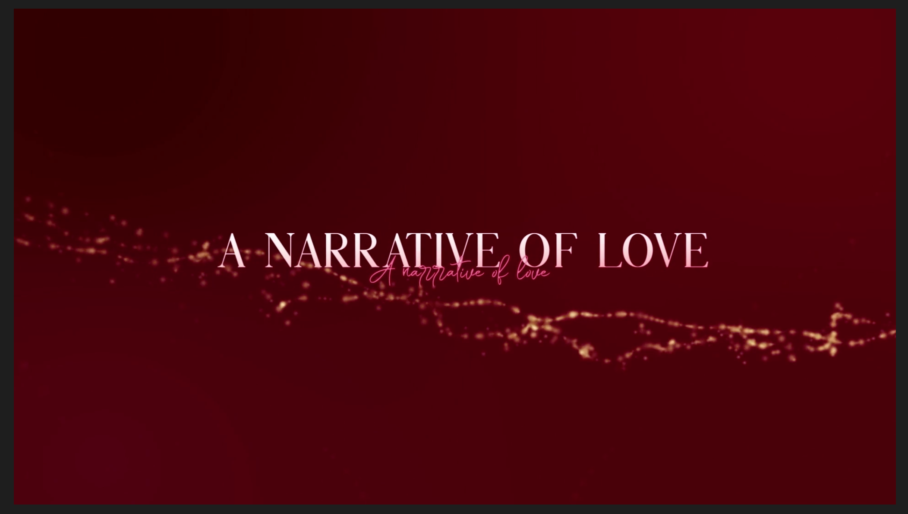

A Narrative of Love dialogue series explores diverse perspectives on the notion of love, with a view to develop a truly captivating and galvanising conception of love that can invite a fundamental shift in human consciousness. Through exploring the power of love in practice, we can begin to heal ourselves and our planet; through leading and governing with love can we transcend the self-interests of the individual, group, and even nation; and by acting in love can we work together in building a better world. We must foster love that encompasses all.
For more information about the Spirit of Humanity Forum and A Narrative of Love, please go to: sohforum.org
The Dialogue Series
Sister Jayanti, ‘It is the inner world that is driving the external world.’
17.11.2020
In this conversation with Sister Jayanti Kirpalani, the European Director of Brahma Kumaris World Spiritual University, Dr Scherto Gill asks questions about how love might be integrated into our everyday lives, politics, and education.
"A Narrative of Love" is a series of conversations with thought leaders and spiritual teachers about how love can be integrated into our everyday lives, politics, and education. It is created in preparation for the 5th Spirit of Humanity Forum which will be held 3-5 June 2021 on the theme "Towards a Loving World - Leadership and Governance for Wellbeing" www.sohforum.org
Listen to these honest, insightful and real conversations with prominent leaders from different fields sharing from their own experience. More to come.
Chapters:
0:00 Intro?
2:48 What have you learned about Love?
11:35 How do we know we are in that flow, Experiencing Love?
17:16 Sister Jayanti on why the world nations have not been able to reach mutual resolutions on measures against climate change and how could love play a role in the process?
23:13 Spirituality is human nature, love is being able to share, at COP meetings pure thought that government and administrative people can share experience of inner-being and become beacons of light amongst negotiators?
25:21 Voice of the skeptic, question is nurturing our spirituality a luxury in our harsh world?
28:09 I have a responsibility to make sure I'm charged with love and truth and joy, it's not the externals that are driving the world
31:05 Voice of the skeptic, isn't it the world that needs changing?
36:54 You know that people think of the UN as a political organization?
40:42 UN 2030 Sustainable Development Agenda 2030, transformation of the world is a spiritual journey.
43:09 I want to share with you, a story .. the good friday agreement one example of the power of faith
46:49 If there's some type of conviction .. faith, hope, humility, honesty, courage and generosity of spirit are important qualities in leadership?
50:07 How to cultivate these qualities .. values are caught not taught?
52:24 Let's have a few minutes together .. Meditation on Love with Sister Jayanti
Lord Alderdice, ‘Lessons of love growing up and working in Northern Ireland’
08.12.2020
In this conversation with Professor Lord John Alderdice, a Northern Ireland politician and Member of House of Lords of the United Kingdom, Dr Scherto Gill asks questions about how love might be integrated into our everyday lives, politics, and education.
As Leader of the Alliance Party of Northern Ireland for more than 10 years Lord Alderdice played a significant role in the negotiations of the 1998 Good Friday agreement. He then became the first speaker of the new Northern Ireland Assembly and the Chairman of the Liberal Democrat Party in the House of Lords at Westminster.
"A Narrative of Love" is a series of conversations with thought leaders and spiritual teachers about how love can be integrated into our everyday lives, politics, and education. It is created in preparation for the 5th Spirit of Humanity Forum which will be held 3-5 June 2021 on the theme "Towards a Loving World - Leadership and Governance for Wellbeing"
Listen to these honest, insightful and real conversations with prominent leaders from different fields sharing from their own experience. More to come.
https://www.sohforum.org/
https://ghfp.org
https://scherto.com
https://lordalderdice.com...
Chapters:
0:00 Intro
2:58 Lessons of love from growing up in Northern Ireland?
7:32 When building peace we need to address disturbed historic relationships between people in communities – then new political structures or institutions can emerge that can help facilitate better communal relationships – not vice versa.
#LordAlderdice on trying to understand the situation in Northern Ireland growing up, why people behave in a self-destructive way, studying psychiatry and then eventually participating in politics and in building peace in Northern Ireland.
10:58 It was question about dealing with disturbed historical relationships, and out of that, new structures could be created and developed, which would facilitate better communal relationships.
12:58 In politics we need to engage with everyone as human beings beyond the politics... – then you can actually begin to make changes in the politics that are more humanizing.
The story of shaking hands with the then Sinn Féin member Alex Maskey in Belfast City Council.
21:54 How do I address this {#peaceprocess} .. if we reach an agreement; a sense that we have betrayed those who came before us .. if we fail to reach an agreement; we will be betraying our children, handing on to them a situation where hopes were raised then dashed. we have a profound moral dilemma, with no way to satisfy all .. it's complex.
22:08 The great dilemma of reaching peace agreement between conflicting parties... we need to recognise that in all relationships there are challenges, dilemmas and contradictions – what is good for the rabbit is not good for the fox and vice versa.
An interesting reflection from the peace talks in Northern Ireland – it is always about how you engage with other persons and enable them to engage with themselves in way it encompasses all the difficulties and contradictions.
23:15 We need to recognise that in all relationships there are challenges, dilemmas and contradictions – what is good for the rabbit is not good for the fox and vice versa.
26:36 How you come to politics. genuine wish to make things better in #society #LordAlderdice on what is important for politicians to hold dear in their leadership and work: Humility, holding dear the goal of making things better for people and not entering into politics for position.
28:11 We are always building on the seeds of past generations – we are part of a larger community than just this generation.
30:21 #LordAlderdice on the importance of healing collective trauma as one of the key steps towards a loving world... it is not just the past... it is also the development from the past... societies develop. We need to be able to differentiate between what has happened, what is happening and what we hope or fear what may happen.
35:15 The three pillars of Spirit of Humanity Forum .. values of dialogue listening silence .. have a place in politics? In working through our collective challenges - the importance of dialogue, listening and reflecting in silence.
37:57 #LordAlderdice on the importance of reflecting in silence. Proposal for NI Assembly to start with 2 minutes of silence was agreed and continues.
41:43 If we have a model of our understanding of wellbeing that is limited to that which can be measured .. distorts
44:31 #Intercommunal #pyschosocial #values complex approach awareness of relationship
45:39 We are aware of others by empathising with how they are feeling, by understanding what they are thinking and wanting, by imagining what we can hope for out of the engagement with them.
Bob Boisture, ‘A habit of heart and mind to engage for the greater good’
19.01.2021
A Narrative of Love is a series of conversations with thought-leaders and spiritual teachers about their understanding of the significance of love in our personal and public lives.
In this conversation with Bob Boisture, President and CEO of the #Fetzer Institute, Dr Scherto Gill asks questions about how love might be integrated into our everyday lives, politics, and education.
https://www.fetzer.org
https://www.sohforum.org
https://ghfp.org
https://scherto.com
13:36 18/01/2021
Chapters
0:00 Intro
0:43 Guest today is Bob Boisture, President and CEO of the #Fetzer Institute
1:15 SOHForum 2021 theme shares Fetzer; Building a Spiritual Foundation for a Loving world, Healing and Wellbeing Human and Ecosystem. How leadership and governance can have a role in all this ?
1:52 Bob Boisture's 3-fold operational definition of Love and Love in my life and work.
4:58 How can we be reassured of the possibility of the gift of #Love in this reciprocal way ? "Love is the only thing that can save us"
6:45 Bob Boisture has put Love at the core of the vision and mission of Fetzer; explaining the meaningful link with a spiritual foundation for a loving world.
10:14 We have a choice to engage for the greater good, opportunity for love .. for me as a lawyer, to work in non-profit and to bring in these values
13:08 Scherto .. "Spirituality, Love, Justice" Love as habit of the heart that other peoples wellbeing becomes ours?
14:26 Bob loves the observation that Justice is Love in Action.
14:42 Enagage the world from a place of love with a committment to the flourishing of all .. moral imperative to try to transfrom institutions .. power ? #MLK .. love without power is anaemic ...
15:36 Looking out at our Social Institutions through a lens of Love, you have to conclude that every social system we have is in need of transformation, relates to the theme of leadership and governance in a powerful way.
16:20 the question of the racial reckoning that we're going through in the United States .. Bob on the Fetzer organizational and action partners approach to our response .. until we do our own work we can't make a constructive contribution in the outside world.
19:55 Cultivating a sense of community at Fetzer
22:30 Love, habits of heart as a point of engagement .. belonging (not inclusion in a set of norms that were developed without them) co-creating a community
24:14 Martin Luther King notion of beloved community an enacment and emplacement of love through dialogue and listening
24:56 Fetzer work on healing the heart of democracy. what is Fetzer's vision of democracy ? what can you say to people disillusioned by exposure to bad politics.
27:54 Give an example of your healing the heart of democracy process to show approach and the difference it makes? .. people on both sides see the other side as an existential threat .. role for civic society .. how to change the fear based polarizing dynamic .. effort to mainstreaming inner work in civil society.
31:54 Follow up .. Aristotle .. common good yes, but no prescription, Fetzer proposes community based on an ethics of love and inner work ?
33:00 Social beings .. Aristotle .. in-groups and out-groups .. virtue orientation to positive values .. spritual and moral formation.
Dr. Vandana Shiva on planting SEEDS OF LOVE.
22.03.2021
Dr Joy DeGruy, about resolving trauma and how we can all BE the healing
05.04.2021
Dr DeGruy highlights key elements that can move society towards healing, at both personal and collective levels. She offers pathways that individuals, organisations, and governments can embark on to repair, rebuild and restructure our common space by accepting and appreciating our shared humanness. How we can all BE the Healing.
Dr DeGruy’s research focuses on the intersection of racism, trauma, violence and American chattel slavery. Here she shares what it feels for black African Americans to negotiate the multiple challenges of living in a racist society, including internalised racism, learned helplessness, and structural dehumanisation. How we dehumanise our own selves when we behave in racist ways. When we put others down or blame others, we are robbing ourselves of our own humanity. She shares about the passing on of trauma when we have no access to means of healing our trauma, so the children start modelling the behaviours of their traumatised parents. And when everyone around them is also traumatised the behaviour becomes 'normalised' and then we become unaware of the problem, that it is something that has a reason and can be treated. How crucial it is to break the evil cycle and not pass the trauma on.
She always felt that humanity is one people and she expresses that with a lot of love and joy. She shares the powerful experience she had when visiting villages in Africa, always being met with a greeting meaning 'I see you'. It made her remember how Afro-American people living in the south, people who don't necessarily know each other, to this day have the habit of acknowledging each other with a nod, meaning 'I see you'. To be seen means 'you are not invisible', 'you are valued', 'you are worthy of being loved'. Realising the value of being seen in this way was life-transforming and prompted her to write her next book.
#spiritofhumanity #reconciliation #healingtrauma
https://joydegruy.com
https://twitter.com/DrJoy...
https://www.sohforum.org...
https://ghfp.org
https://scherto.com
#DrJoyDeGruy #bethehealing #RacialEquity
Theresa Chuang and Chris Zheng on Love as Harmony
19.05.2021
#Ecology #Culture #Sustainability
Notes:
infinite responsibility = love
civil diplomacy designing resilient communities outdoor nature
sustainability is in fashion in China
head hand heart
Farm Sincera
Tao .. growth (leads to) erosion of natures way ..
by introducing ecological civilisation into china's constitution .. serves as ethical framework .. return to reverence of harmony of nature
group of people shun society for practice of Tao, but we wanted to put it into mainstream life. we have NGO community we get moral support
choice for us .. we practice Tao in mainstream society ..
Chris .. social enterprise, we try to do it with strong business models ..
at certain level business mind comes in .. mechanism of philanthropism not well developed in China
what have you learned about love ?
Theresa .. in China .. love is indirect
Chris .. Chinese culture is about harmony .. western culture love between individuals / families
what western society can learn form china is harmony and what china can learn from western society is love
China .. balance .. allow ourselves to love ourselves more and be more expressive with love
Dr. Azza Karam on Religion, Dialogue and Love
19.05.2021
A Narrative of Love is a series of conversations with thought-leaders and spiritual teachers about their understanding of the significance of love in our personal and public lives hosted by Dr. Scherto Gill - in preparation for the 5th SoH Forum 3. - 5. June 2021 'Towards a Loving World: Leadership & Governance for Well-Being'
In this conversation Dr. Scherto Gill talks with Prof. Azza Karam, Ph.D. Secretary General, Religion for Peace.
https://www.rfp.org
https://twitter.com/Manso...
https://www.sohforum.org...
https://ghfp.org
https://scherto.com
#ReligionsforPeace #Diplomacy #Peace #towardsalovingworld
Lene Rachel Anderson, ‘About the Nordic Secret - expanding your worldview’
08.01.2021
In this conversation Dr. Scherto Gill talks with Lene Rachel Andersen, author, economist, futurist and philosopher about the Nordic model of education, the Folk High School approach, and how it had played a significant part in transforming countries such as Denmark, Sweden, Norway, and to some extent also Finland. This is the background to the book ‘The Nordic Secret’ which she co-authored with Tomas Björkman.
She shares how education in the Nordic countries supported inner transformation, empowerment, self-awareness and self-authority in young people to build strong democracies and welfare societies. The Nordic Secret.
"A Narrative of Love" is a series of conversations with thought leaders and spiritual teachers about about their understanding of the significance of love in our personal and public lives and how we can cultivate love in our everyday lives, politics, and education.
It is created in preparation for the 5th Spirit of Humanity Forum which will be held 3-5 June 2021 on the theme "Towards a Loving World - Leadership and Governance for Well-being"
https://www.sohforum.org
https://ghfp.org
https://scherto.com
https://www.leneracheland...
Chapters
0:00 Intro
4:00 (approx) Lene on love in her upbringing.
11:05 Lene explaining the Folk High School.
12:50 The importance of listening to young people.
18:37 The importance of beauty in education and how we it has been abandoned in our education system today.
20:54 How singing played a role in education; communal singing.
23:42 We can learn so much of the Folk High School.
26:47 The static hero and the ethic hero, the path of transformation.
30:04 Empowerment, the spiritual connection went hand in hand with practical knowledge.
33:04 We-ness of Folk High School provided basis for welfare-societies.
36:06 How can we integrate the examples of the Folk High School into our education system today? How to make education support transformative processes.
36:57 Beauty has been taken out of the equation and left is the money; that is poverty. [note 1]
37:35 Lene describing a few changes she would like to see in our educational system.
44:12 Which narratives can help us towards a global wellbeing; which choices do leaders need to make to bring people together in embarking on new hero journies? [note 2]
44:20 Everyone needs to have a change, this is about empowerment.
45:15 My narrative would be: We have come such a long way, our species has been on an amazing journey, we are now reconnecting.
47:14 We have to change the narrative [Note 3]
Quotes from the dialogue
“If we have an educational system that is so focused on science and technology in order for people to get an education so they can go out and be producers and consumers – they will lose all the meaning giving, the purpose giving parts of education and it is just going to be meaningless data and we are going to have angry, frustrated and anxious young people that don’t know why they are learning what they are learning and I think that is what we are seeing.”
“The one big lesson I have learned from the Nordic history is the importance of lifting from the bottom. Everybody needs to have a fair chance and has access to the skills, understanding and meaning making that allows them to thrive and make the most out of their lives for themselves and for others. So this is about empowerment – it is the key. In empowerment is the idea that things can be different, that there is hope but also skills, social skills and collaboration and respecting the individual".
“The choices we can focus on are live, breath and the spirit – and how as species we can enjoy and appreciate all the cultural and biological diversity and the richness that is around this amazing globe that we inherited… nature is so rich and we are exploiting it because we have failed economic structure, system, idea, narrative – and we have to change that narrative”
Listen to these honest, insightful and real conversations with prominent leaders from different fields sharing from their own experience. More to come.
Steve Killelea on the relation between positive peace and love.
29.05.2021